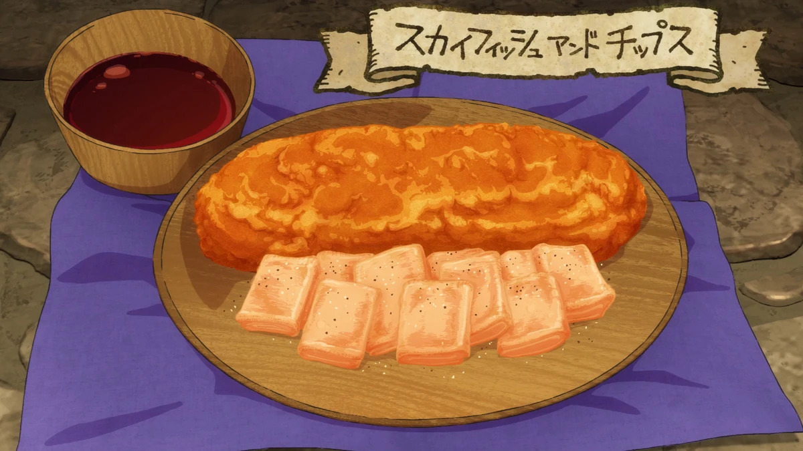

Sky Fish and Chips

DESCRIPTION
A dish prepared by Laios from the sky fish familiar made by Marcille.
The crispy fried sky fish contains the perfect mixture between veggies and meat.
INGREDIENTS
- 1 basilisk egg
- 1 sky fish
- wheat flour
- water
- salt and pepper
- vinegar/tartar sauce (if available)
INSTRUCTIONS
- Chop up sky fish into desired length
- Trim off the wings at the base
- Squeeze out all the moisture from the fish and wings with a scrap of cloth
- Season with salt and pepper
- Dunk each piece of meat into a mixture of flour, egg, and water
- Fry the pieces in a pot of oil
- Serve with sauce if available